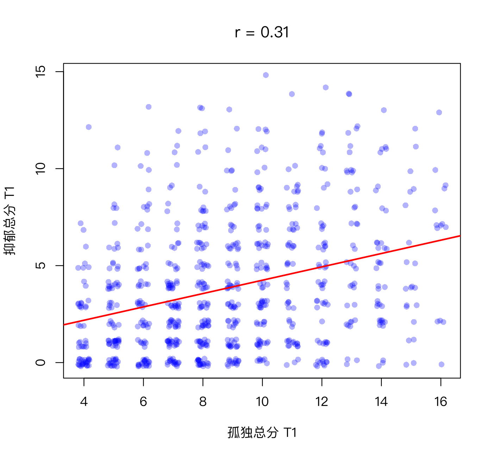

协方差与相关：两个变量如何一起变化
本课学习目标
- 从散点图直觉理解协方差与相关
- 计算并解释皮尔逊相关系数 r 的方向与大小
- 知道斯皮尔曼相关与多分格相关（polychoric）适用的情境
- 牢记“相关不等于因果”，并能举出混杂变量的例子
核心概念
- 散点图scatter plot
- 协方差covariance
- 相关系数correlation coefficient
- 皮尔逊相关Pearson's r
- 斯皮尔曼相关Spearman's ρ
- 多分格相关polychoric correlation
- 相关矩阵correlation matrix
- 混杂变量confounder
本课结构：直觉 → 最少数学 → R 代码 → 理解检查 → 练习 → 小结。文中的交互图示可拖动或点击；测验答错会先给提示，答错两次可查看解析。
① 直觉两个变量“一起变化”的程度
社工小陈把 800 位居民画在一张图上：横轴是 T1 孤独总分，纵轴是 T1 抑郁总分，每个人是一个点。她发现点云整体“向右上方倾斜”：孤独分高的人，抑郁分也倾向于高。但也有很多例外：有人很孤独却不抑郁，有人不孤独却很抑郁。“倾向于”到底有多强？我们需要一个数字来概括。
这种图叫散点图（scatter plot）。下面是课程数据的真实散点图（R/L1-4.R 画出；为避免点重叠，给每个点加了一点随机“抖动” jitter）：

协方差：用“象限”来想
在点云中央画一个十字：竖线是孤独的均值，横线是抑郁的均值。于是每个点落在四个象限之一：
- 右上：两者都高于平均 → 离均差 (+)(+) = 正；
- 左下：两者都低于平均 → (−)(−) = 正；
- 左上、右下：一高一低 → 负。
把所有人的“离均差乘积”加起来再平均，就是协方差（covariance）。如果大多数点落在右上和左下，协方差为正；落在左上和右下居多，为负；四个象限差不多，接近 0。
在上面的模拟里勾选“显示 z 乘积的象限”，拖动 ρ（读作 rho，表示总体相关）：ρ 越接近 1，点越集中在绿色象限、越像一条直线；ρ = 0 时点云是一团圆形；ρ 为负时点集中在红色象限。再把样本量调到 10，多点几次“重新抽样”：小样本中算出的 r 会在总体 ρ 周围大幅跳动。这是下一课的主题。
从协方差到相关系数
协方差有个缺点：它的大小取决于量尺。孤独用 4–16 分还是 0–100 分，协方差会差很多倍。解决办法你已经会了：先把两个变量都变成 z 分数，再算协方差。这就是相关系数（correlation coefficient），最常用的版本叫皮尔逊相关（Pearson's r）。它永远在 −1 到 1 之间：
| r | 含义 |
|---|---|
| +1 | 完美正相关：所有点恰好在一条向上的直线上 |
| 0 | 没有线性关系（可能有曲线关系） |
| −1 | 完美负相关：所有点恰好在一条向下的直线上 |
方向看符号，强弱看绝对值：r = −0.6 比 r = 0.3 更强。心理学中常引用 Cohen 的粗略标准：|r| ≈ 0.1 小、0.3 中、0.5 大，但这只是参考，不同领域的“大小”标准不同。
其他相关：当数据是定序的
- 斯皮尔曼相关（Spearman's rank correlation）：先把每个变量的数值换成名次（第 1 名、第 2 名……），再算皮尔逊相关。英文文献常把它记作 Spearman's ρ；本课程用 ρ 只表示总体相关；为免混淆，斯皮尔曼相关一律记作 \(r_s\)。它只关心“排序是否一致”，对偏态和极端值更稳健。
- 多分格相关（polychoric correlation）：假设每道李克特题背后有一个连续的、正态分布的“潜在倾向”，被切成了几个等级；它估计的是这两个潜在连续变量之间的相关。题目等级少（如 0–3）、偏态明显时常用。网络分析中常用的
qgraph::cor_auto()会自动检测：等级数不多（默认 ≤ 7）的变量被当作定序变量，计算多分格相关。
课程数据中“情绪低落”与“睡眠问题”（T1）：皮尔逊 r = 0.40，斯皮尔曼 \(r_s\) = 0.39，多分格相关 = 0.48。多分格相关通常比皮尔逊大一些，因为皮尔逊被粗糙的 4 个等级和地板效应“压低”了。
什么会影响 r 的大小？范围限制
相关不仅取决于两个变量的关系有多紧，还取决于样本里变量的变化范围。如果只研究“社会支持很高”的人，社会支持几乎人人相同，它与其他变量的相关就会被压低。课程数据中，全体 800 人里社会支持与孤独总分的相关是 −0.42；只看社会支持 ≥ 4 分的 185 人，相关缩小到 −0.22。这叫范围限制（restriction of range）。社工研究常常只在“服务对象”中取样（他们的困扰程度本来就集中在较高的范围），这时得到的相关可能比在一般人群中弱，但这不一定说明关系本身弱。
相关矩阵：网络分析的原材料
有 p 个变量时，两两之间都有一个相关，排成一张 p × p 的表，叫相关矩阵（correlation matrix）。对角线都是 1（自己与自己），而且上下对称（A 与 B 的相关 = B 与 A 的相关）。9 道题就有 9 × 8 / 2 = 36 个不同的相关。模块 6 你会看到：横断面网络几乎完全是从这张表“加工”出来的；CLPN 则用 T1 与 T2 之间的关系做回归。两种网络的原材料都是这类相关（协方差）矩阵。
相关 ≠ 因果：混杂变量
夏天冰淇淋销量和溺水人数高度正相关。冰淇淋导致溺水吗？当然不是：天气炎热同时让人买冰淇淋和去游泳。这个同时影响两者的第三变量叫混杂变量（confounder）。
社工领域的例子：“社区活动参与次数”与“抑郁得分”负相关。可能的解释至少有：(1) 参与活动降低抑郁；(2) 反向因果：抑郁的人本来就不愿出门参加活动；(3) 混杂：身体健康状况好的人既能参加活动、又不容易抑郁；(4) 选择偏差：只有状态较好的人才回答了问卷。一个相关系数无法区分这四种解释。
② 最少数学协方差与 r
- \((x_i-\bar x)(y_i-\bar y)\)
- 第 \(i\) 个人两个离均差的乘积：同号为正，异号为负（象限图）。
- \(n-1\)
- 与方差一样，除以 \(n-1\)。
- \(s_X, s_Y\)
- 两个变量各自的标准差；除以它们 = 消除量尺。
- \(z_{x_i} z_{y_i}\)
- 两个 z 分数的乘积；r 就是这些乘积的“平均”（除以 \(n-1\)）。
小验证：一个变量和它自己的协方差是什么？\(\operatorname{cov}(X,X) = \sum (x_i-\bar x)^2/(n-1)\)，就是方差。所以 \(r(X,X) = s_X^2/(s_X s_X) = 1\)。
手算一个小例子
3 个人：孤独 \(x\) = 2, 4, 6；抑郁 \(y\) = 1, 3, 2。
- \(\bar x = 4,\ \bar y = 2\)。离均差：\(x\): −2, 0, 2；\(y\): −1, 1, 0。
- 乘积：2, 0, 0，和 = 2；\(\operatorname{cov} = 2/2 = 1\)。
- \(s_X = \sqrt{8/2}=2,\ s_Y=\sqrt{2/2}=1\)；\(r = 1/(2\times1) = 0.5\)。
③ R 代码cov()、cor() 与相关矩阵
对应脚本：R/L1-4.R。
source("R/_setup.R")
dat <- read_course_data()
dat$lone_sum_t1 <- rowSums(dat[, paste0(lone_items, "_t1")])
dat$dep_sum_t1 <- rowSums(dat[, paste0(dep_items, "_t1")])
x <- dat$lone_sum_t1; y <- dat$dep_sum_t1
cov_hand <- sum((x - mean(x)) * (y - mean(y))) / (length(x) - 1) # 协方差
r_hand <- cov_hand / (sd(x) * sd(y)) # 相关
cat("协方差：手算", round(cov_hand, 3), " cov()", round(cov(x, y), 3), "\n")
cat("相关 r：手算", round(r_hand, 3), " cor()", round(cor(x, y), 3), "\n")
vars <- c("lone_sum_t1", "dep_sum_t1", "social_support_t1", "sleep_hours_t1", "life_sat_t1")
round(cor(dat[, vars]), 2) # 相关矩阵
cat("\nSpearman r(孤独, 抑郁) =", round(cor(x, y, method = "spearman"), 3), "\n") # 斯皮尔曼相关协方差：手算 3.268 cov() 3.268
相关 r：手算 0.312 cor() 0.312
lone_sum_t1 dep_sum_t1 social_support_t1 sleep_hours_t1
lone_sum_t1 1.00 0.31 -0.42 -0.12
dep_sum_t1 0.31 1.00 -0.18 -0.29
social_support_t1 -0.42 -0.18 1.00 0.05
sleep_hours_t1 -0.12 -0.29 0.05 1.00
life_sat_t1 -0.33 -0.25 0.35 0.06
life_sat_t1
lone_sum_t1 -0.33
dep_sum_t1 -0.25
social_support_t1 0.35
sleep_hours_t1 0.06
life_sat_t1 1.00
Spearman r(孤独, 抑郁) = 0.316相关矩阵有 5 列，一行放不下时 R 会把最后一列折到下面单独打印（控制台更宽时可能不折行）；内容是同一张 5 × 5 的表。
读相关矩阵：对角线全是 1；上下三角对称。最强的关系是孤独与社会支持（r = −0.42：社会支持越多，越不孤独）。睡眠时长与抑郁 r = −0.29。这五个变量就是 1.4 练习 A 要你“预测”的那张表。
x2 <- dat[, c("dep1_t1", "dep3_t1")] # 情绪低落、睡眠问题（0–3 分）
round(cor(x2)[1, 2], 3) # 皮尔逊
round(cor(x2, method = "spearman")[1, 2], 3) # 斯皮尔曼
round(psych::polychoric(x2)$rho[1, 2], 3) # 多分格相关[1] 0.4
[1] 0.387
[1] 0.479如果数据中有 NA，cor() 默认返回 NA。可以加 use = "pairwise.complete.obs"（每一对变量用各自都不缺的个案）或 use = "complete.obs"（只用所有变量都不缺的个案）。2.5 课和 4.3 课详谈两者的区别。
完整例题：手算协方差与 r
5 个人的孤独 x = 1、2、3、4、5，抑郁 y = 2、4、5、4、5。
- 均值：x̄ = 3，ȳ = 4。
- 离均差：x 为 −2、−1、0、1、2；y 为 −2、0、1、0、1。
- 离均差乘积：4、0、0、0、2，和 = 6，协方差 = 6 ÷ 4 = 1.5。
- 标准差：x 的离均差平方和为 10，SD = √(10/4) ≈ 1.581；y 的为 6，SD = √(6/4) ≈ 1.225。
- r = 1.5 ÷ (1.581 × 1.225) ≈ 0.775。
可以在 R 里核对：cor(c(1,2,3,4,5), c(2,4,5,4,5))。你会看到，乘积为正的点（第 1、5 人：同时低于、同时高于均值）在推高 r；乘积为 0 的点（有一个变量正好在均值上）不贡献任何信息。
- 忽视异常值。在小样本里，一个极端个案就能把 r 从 0.1 拉到 0.4。画散点图，或用斯皮尔曼相关做一次对照。
- 脱离情境给 r 贴“强 / 弱”的标签。r = 0.3 在心理社会研究中相当常见，也不算小：r² = 0.09，即约 9% 的变异可以“共享”。
④ 理解检查即时测验
r = −0.6 和 r = 0.3，哪个关系更强？
- 正确：强弱看绝对值，0.6 > 0.3；负号只表示方向。
- 符号表示方向，不表示强弱。
- 绝对值不同：0.6 与 0.3 差了一倍。
- 强弱只看绝对值，方向不同的相关照样可以比较强弱。
3 个人的数据：x = 1, 2, 3；y = 6, 4, 2。皮尔逊相关 r 是多少？
为什么说相关矩阵是网络分析的“原材料”？
- 通常会进一步加工（偏相关、正则化），见模块 6。
- 正确。
- 偏相关、正则化都不能把相关变成因果；混杂、反向因果等解释依然存在。
r = 0 能说明两个变量“完全没有关系”吗？
- 这是本课提醒的误读：r 只衡量直线关系，U 形关系的 r 可能接近 0。
- 样本量大只能让 r 估得更准；曲线关系的 r 再准也还是接近 0。
- 正确。所以一定要画散点图。
“社会支持与抑郁负相关”的可能解释中，哪一项是“反向因果”？
- 这是通常假设的方向（支持 → 抑郁），不是反向。
- 正确：箭头方向与常见假设相反。
- 这是混杂变量：第三个变量同时影响两者，两者之间不一定有直接作用。
- 这是选择偏差：谁进入样本本身造成了关联。
网络分析中常用的 qgraph::cor_auto() 对 0–3 分的抑郁题会怎么处理？
- 它会先检测变量是否为定序；只有 4 个等级的题目不会按皮尔逊处理。
- 正确：等级数不多的变量（默认 ≤ 7 个等级）被当作定序处理。
- 那是斯皮尔曼相关的做法；cor_auto() 对定序变量用的是多分格相关。
⑤ 练习动手练习
练习 1.4-A：先猜，再验证
不看数据，为 5 个变量（孤独、睡眠、抑郁情绪、社会支持、运动）画出你预期的相关矩阵，每格填 + / − / 0，并为每个格子写一个字的理由。之后在 2.5 课用真实数据对照。
参考预期与课程数据对照
常见预期：孤独—抑郁 +；孤独—社会支持 −；睡眠时长—抑郁 −；社会支持—抑郁 −；运动—抑郁 −；运动—睡眠 +（课程数据中没有“运动”变量，这一行只做预期）。
课程数据 T1（总分层面）：孤独—抑郁 0.31；孤独—社会支持 −0.42；睡眠时长—抑郁 −0.29；社会支持—抑郁 −0.18；社会支持—睡眠 0.05（几乎为 0）。写下差异时，可以思考：为什么社会支持与睡眠几乎无关？（提示：模拟数据中睡眠时长主要由“睡眠问题”题目决定，与孤独特质无关。真实数据可能不同。）
练习 1.4-B：社工领域的“冰淇淋与溺水”
写一个社工领域的混杂例子：两个变量相关，但相关主要来自第三个变量。画出三者的箭头图。
参考示例
“接受低保救助的家庭，子女学业成绩更低。”这不说明救助降低了成绩；家庭经济困难同时导致了申请救助和学习资源不足。箭头：经济困难 → 救助；经济困难 → 成绩。如果在分析中“控制”家庭收入，救助与成绩的关联可能大幅减弱甚至反转（3.2 课的多元回归就是做这件事）。
练习 1.4-C：R 动手
计算 T1 的 9 道题目之间的相关矩阵（cor(dat[, vars_t(1)])），找出：(1) 相关最强的一对题目；(2) 跨构念（孤独题 × 抑郁题）中相关最强的一对；(3) 对 dep2_t1 和 dep4_t1 分别算皮尔逊、斯皮尔曼和多分格相关（代码见本课“三种相关的比较”），用一句话说明哪一个最大、为什么。
参考代码与提示
source("R/_setup.R")
dat <- read_course_data()
R <- round(cor(dat[, vars_t(1)]), 2)
R
R[paste0(lone_items, "_t1"), paste0(dep_items, "_t1")] # 行 = 孤独题，列 = 抑郁题：跨构念的 4 × 5 块提示：孤独题之间约 0.44–0.51（lone1–lone4 与 lone2–lone4 均为 0.51）；抑郁题之间约 0.37–0.44；跨构念的在 0.12–0.25 之间，最强的是 lone3（与人隔绝）与 dep5（无价值感），r = 0.25。同一构念内的相关明显更强，所以网络图中同色节点会聚在一起。
第 (3) 问：通常多分格相关最大，皮尔逊和斯皮尔曼较接近。课程数据中 dep2_t1 与 dep4_t1 的皮尔逊、斯皮尔曼、多分格相关依次约为 0.44、0.43、0.52（R/solutions/L1-4_solution.R）。原因是 0–3 分只有 4 个等级、又有地板效应，皮尔逊把粗糙的等级当成精确数值，相关被“压低”；多分格相关估计的是背后连续倾向之间的相关（与“情绪低落—睡眠问题”的 0.40 / 0.39 / 0.48 是同一模式）。
小结带走三句话
- 协方差 = 离均差乘积的平均；相关 r = 标准化后的协方差，范围 −1 到 1，符号看方向，绝对值看强弱。
- 定序、偏态的题目可考虑斯皮尔曼或多分格相关；相关矩阵是网络分析的原材料。
- 相关 ≠ 因果：至少还有反向因果、混杂、选择偏差等解释。下一课：1.5 抽样、标准误与置信区间。
CLPN 从零开始 · 第 1.4 课 · 返回大纲